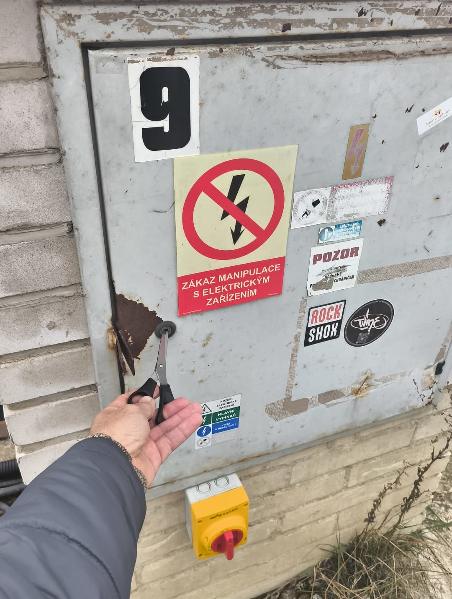

Výpadek proudu – první pomoc
Pokud jste schopni jednat na elektrické desce, zkontrolujte panely jako na tomto obrázku. Důležité: Když se budete dotýkat jakéhokoli elektrického panelu nebo spotřebiče, vždy noste gumové podpatky!
Viz níže a spoj se s námi v případě potřeby!

Červené tečky ukazují umístění spínačů, u kterých je třeba zkontrolovat, zda jsou v poloze nahoru.
Nejprve zkontrolujte elektrický panel uvnitř houseboatu: všechny spínače by měly být v poloze nahoru.

Všechny spínače by měly být zapnuté. (pokud tam není značka, páska nebo něco neobvyklého).

Elektrické panely jsou na doku, podobné tomuto. Některé jsou na zádech.

Zkontrolujte, jestli jsou v pozici nad modrou bránou.

Tyhle se také dají zakopnout.

Na začátku parkoviště zkontrolujte, zda má číslo 9 všechny vypínače (


Číslo 9 uvnitř (potřebujete klíč nebo něco, co otáčí kolík)
Tip: nůžkami lze pootočit čtvercový otvor rukojeti a otevřít číslo 9.
DŮLEŽITÉ: dvířka panelu potom vždy znovu zavřete, zvláště za deštivého počasí.

Další číslo 8 má několik vypínačů, které musí být také zapnuté.
Tip: nůžkami lze pootočit čtvercový otvor rukojeti a otevřít číslo 8.
DŮLEŽITÉ: dvířka panelu potom vždy znovu zavřete, zvláště za deštivého počasí.

Podívejte se dovnitř. Vždycky zkontrolujte, jestli nikdo nepracuje dolů po proudu!
DŮLEŽITÉ: PROSÍM UVEĎTE, KTERÝ VYPÍNAČ BYL NEFUNKČNÍ. UDĚLEJ SI FOTKU PŘED A PO.
V domácích člunech jsou výpadky elektřiny častější než v bytě z důvodů kapacity a více požadavků kvůli počasí, zejména ve velmi teplých nebo velmi chladných dnech.
Tato stránka byla automaticky přeložena z anglického průvodce. V případě nejasností platí anglická verze. Originál v angličtině